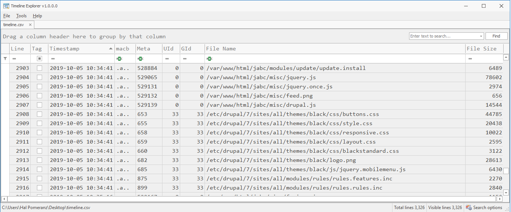
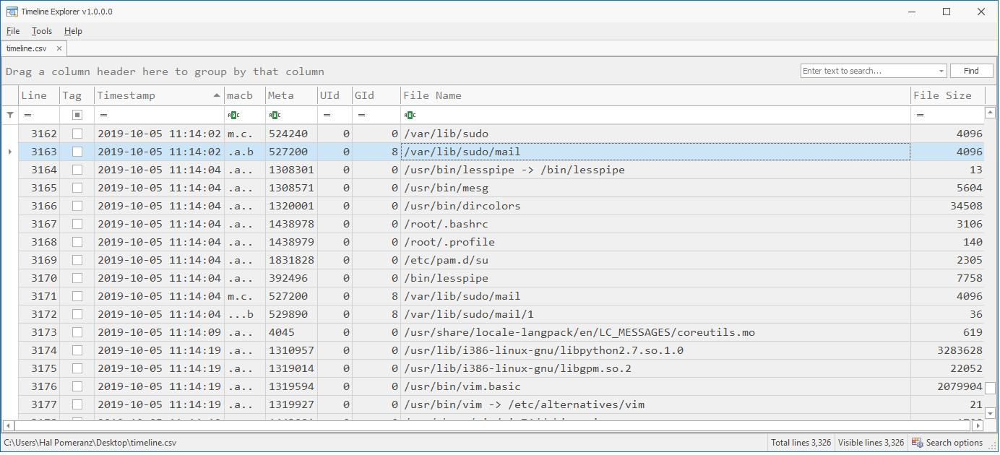
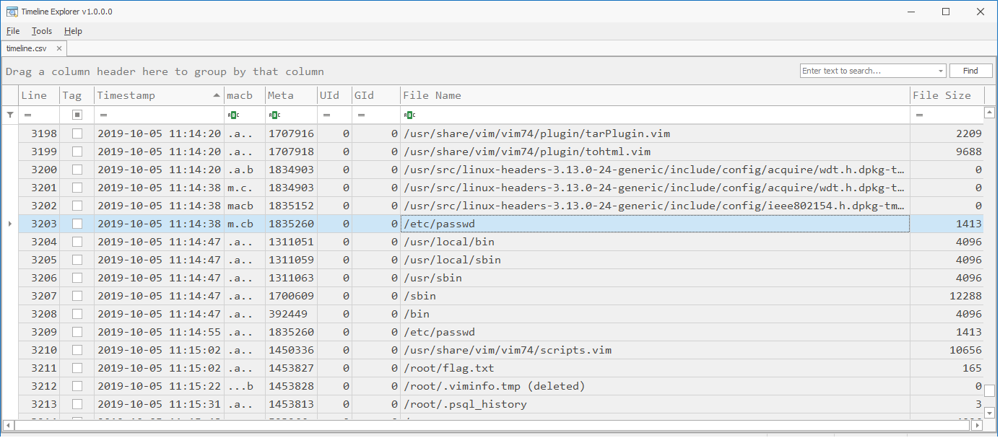

Exercise 11: Timeline Analysis
Hands-On Exercise
The first step is to create bodyfiles for the root and /boot file systems, using the techniques I documented in the slides:
[root@LAB etc]# mkdir -p /images/lab11 [root@LAB etc]# cd /images/lab11/ [root@LAB lab11]# fls -r -m / /dev/VulnOSv2-vg/root | gzip >bodyfile-root.gz [root@LAB lab11]# fls -r -m /boot -o 2048 /mnt/test/img/ewf1 | gzip >bodyfile-boot.gz
As a reminder, the -r flag means recursively walk through the entire file system. -m means output in mactime format and the directory path that follows is the mount prefix to prepend to all file paths. In the case of the /boot file system, we also have to specify a sector offset where the file system starts in our disk image. I'm gzip-ing both bodyfiles to save space.
Based on our triage steps in the last lab, it appears that the attacker activity happend on Oct 5, 2019. Just to be on the safe side, let's build our timeline from Oct 4 onwards:
[root@LAB lab11]# zcat bodyfile-* |
mactime -d 2019-10-04 |
grep -v deleted-realloc >timeline.csv
[root@LAB lab11]# wc -l timeline.csv
3327 timeline.csv
Note that I have added an extra step in the pipeline with the "grep -v deleted-realloc". The fls command adds this tag when it finds a deleted directory entry pointing to an inode that has been reused by another file. For the most part, I find these entries more distracting than useful, so I filter them out as a first pass.
What I did not do is use the -y option for ANSI dates or include the passwd and group information from the image. That's because I plan to use Eric Zimmerman's Timeline Explorer to view my timeline and it wants dates in the default format and numeric User and Group IDs.
You will now need to open the timeline.csv file to view the timeline. I have included LibreOffice in the lab VM, or you could copy the file to your host operating system and use Excel. But if you have a Windows host operating system, I recommend trying out Eric Zimmerman's Timeline Explorer tool, which you can download from https://ericzimmerman.github.io/.
There are over 3300 lines in our timeline. We need to be able to get to the actionable data quickly. This is where the concept of pivot points becomes so important. What do we know from our earlier disk triage? What were the most significant events? Starting with those events as a pivot point, we can begin to analyze the most relevant sections of the timeline.
The earliest event we noted was the creation of the /tmp/apache-xTRhUVX executable, which appeared to be the attacker's privilege escalation mechanism. Let's jump to the point in the timeline where that file is created.

In addition to the "Timestamp" and "File Name" columns, pay attention to the "macb" column that tells you which of the timestamps are being updated at this time. In the highlighted row in the screen shot we see "m.cb", which means all timestamps except atime are being updated--typical when a file is newly created. If you search for it, you'll find the atime update on this file farther down the timeline when the program is executed.
Looking at the lines around the creation of the file, it appears that a program is being compiled. Scroll a few more lines backward and you'll see the atime on the GCC compiler being updated, which indicates that it's being executed. Since we see no other btime updates happening, it's reasonable to assume what is being compiled is the exploit /tmp/apache-xTRhUVX.
But then shouldn't we see some source code files being dropped on the system before the executable is compiled? Scrolling backwards from this point in the timeline, I see nothing that looks like source code. Perhaps the source code was cleaned up by the attackers.
However, as we scroll backwards we do pick up some clues about the vulnerable web app that may have been exploited:
Given Drupal's security history, an exploit of some sort isn't too hard to believe. It's difficult to tell from the timeline data exactly which Drupal exploit is being used. Perhaps looking at the web logs in a later lab will give us some clues.
Now jump to the atime update on /tmp/apache-xTRhUVX and see what the timeline tells us about artifacts from the running exploit:

There's a /tmp/ccOOU3I8.c file that gets dropped when the exploit runs and is apparently deleted later (bonus points if you can recover the file from unallocated). There are also references to overlayfs and /tmp/ofs-lib.so which you may have seen if you found the exploit code via Google in the previous lab exercise.
After the exploit runs in /tmp you can see atime updates on whoami and useradd. The whoami program would be one way for the attacker to determine if their privilege escalation exploit gave them root access. useradd is used to create new user accounts. The timeline shows us the home directory of the new user being created:

The home directory of the php user is created right after the useradd command runs. So that seems to be the account that got created here. Around that event we can see the updates to the passwd and group files we found in the last exercise.
Just a bit further down you'll see atime evidence that chsh (change shell) and chpasswd (change password) were executed. I'm assuming this was the updates the attacker did to unlock the mail account. usermod could be used to add mail to the sudo group.

In the previous exercise, I mentioned that the /var/lib/sudo/mail directory was an indicator that the mail account was using sudo. Let's use the creation of this directory as our next pivot point and see what sort of story the file system artifacts tell us.
Immediately after /var/lib/sudo/mail gets created we see /root/.bashrc and /root/.profile being read, along with /etc/pam.d/su. I am willing to bet that the mail account did something like "sudo su".
The next thing we see is an atime update on the vim text editor. Going a bit farther down the timeline, we can speculate about which file was being edited:
Looks like modifications to /etc/passwd--perhaps relocating the php account in the file? The command history and .viminfo file from root's home directory can be used to confirm this theory. We will check that out in a later lab exercise.
So how can we flesh out our timeline from the last exercise with these new findings?
<time unknown> Possible Drupal remote code exploit
2019-10-05 11:04:14 /tmp/apache-xTRhUVX executable dropped by www-data
(CVE-2015-1328 privilege escalation? compiled on system?)
2019-10-05 11:06:38 useradd command runs, php account added
2019-10-05 11:08:31 chsh command runs (unlock mail account?)
2019-10-05 11:09:03 chpasswd command runs (again mail account?)
2019-10-05 11:09:18 usermod command runs (mail into sudo group?)
2019-10-05 11:09:18 /etc/group modification (mail and php in "sudo" group)
2019-10-05 11:14:02 mail account first sudo usage ("sudo su"?)
2019-10-05 11:14:38 /etc/passwd modifications (php account moved via vim?)
2019-10-05 11:17:42 /var/www/html/jabc/scripts/update.php webshell
added by root account
2019-10-05 11:21:39 /etc/shadow modification (mail and php accounts???)
We haven't really investigated the last two items via our timeline. See what clues you can pick out on your own!